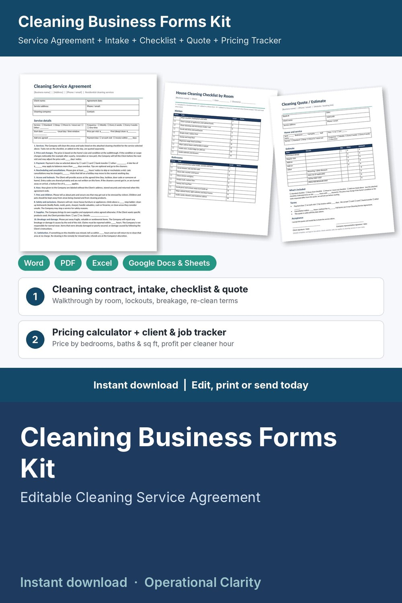

Cleaning Business Forms Kit

Quote every home so it actually pays you and your cleaners, get the agreement signed and run every visit from one checklist: a complete cleaning business forms kit with a working pricing calculator and client / job tracker, not just a few printable pages.
WHAT'S INSIDE
- Cleaning Service Agreement (Word + PDF, 2 pages): service, frequency and price per visit, 15 editable terms (services, price changes, payment and late fees, rescheduling and cancellations, access and lockout fee, keys, pets and children, safety exclusions, supplies, breakage and damage, re-clean guarantee, insurance, staff non-solicitation, ending the agreement, governing law), optional extra terms and signatures.
- Cleaning Client Intake & Walkthrough Form (Word + PDF, 2 pages): client details, the home (size, bedrooms, baths, floors, pets, condition, parking), service wanted and add-ons, access and product preferences (no codes written down), room-by-room walkthrough table, quote summary, signatures.
- House Cleaning Checklist by Room (Word + PDF, 2 pages): kitchen, bathrooms, bedrooms, living and dining areas and whole home, each task marked standard / deep / move-in-move-out, notes for next visit, time in / out and sign-off.
- Cleaning Quote / Estimate Form (Word + PDF, 1 page): first (deep) clean, regular visit, add-ons, discount, sales tax line, totals, what's included, terms and client acceptance.
- Cleaning Business Pricing Calculator & Client / Job Tracker (Google Sheets / Excel, 7 tabs):
* Settings: cleaner pay per hour, payroll extras, overhead, billable hours, supplies per hour, target margin, lowest margin, card fees, minimum visit price, lockout fee; price per cleaner hour calculated for you
* Rates: time model (minutes per bedroom, bathroom, half bath and 100 sq ft, extra time for pets), standard / deep / move-out multipliers, weekly / every 2 weeks / every 4 weeks / one-time time factors and discounts, add-on menu with suggested prices and BELOW SUGGESTED flags
* Quotes: home details in, cleaning minutes, cleaner hours, time on site, price per visit, estimated cost, profit and margin out, LOW MARGIN flag
* Clients: contact details, frequency, agreed price per visit, agreement and walkthrough dates, jobs, billed, paid, balance, last clean, next clean due and booking alerts (OVERDUE / DUE SOON / SCHEDULED)
* Jobs: every visit with crew size and hours, price override for first deep cleans, add-ons, discounts, labor, supplies, card fees, profit per cleaner hour, balances and alerts (AGREEMENT MISSING / BALANCE DUE / LOCKOUT FEE DUE / SEND AGREEMENT / UPDATE STATUS / UPCOMING)
* Dashboard: revenue, collected, balances, tips, labor, supplies, profit before overhead, profit per cleaner hour, average job, recurring clients, month-by-month and service-type tables, chart and a list of jobs that need attention
- START HERE guide (PDF)
HOW IT WORKS
1. Enter your costs and target margin on Settings, then adjust the time model and add-on prices on Rates.
2. Do the walkthrough with the intake form, add a row to Quotes and copy the price into the Quote / Estimate Form.
3. When the client says yes, send the Service Agreement and add them on Clients with their price per visit.
4. Log each visit on Jobs and print the Checklist by Room for your cleaners.
5. Check the Dashboard weekly for profit per cleaner hour, unpaid balances, missing agreements and clients due to book.
Example data (16 quotes, 14 sample clients, 77 jobs) shows how it all connects; delete it and type your own. Yellow cells = type here, green cells = calculated.
FORMATS
- Word .docx (edit in Microsoft Word, Google Docs, Pages or LibreOffice) + PDF, US Letter
- Excel .xlsx made for Google Sheets (also works in Excel and LibreOffice; no macros)
This is an instant digital download, no physical item will be shipped.
Editable template, not legal advice. Have the agreement reviewed by a local attorney and check your state and local requirements (business license, insurance or bonding, cancellation fees, non-solicitation clauses, sales tax on services) before you use it. Example times and prices are a starting point: time your own cleans and set your own rates.